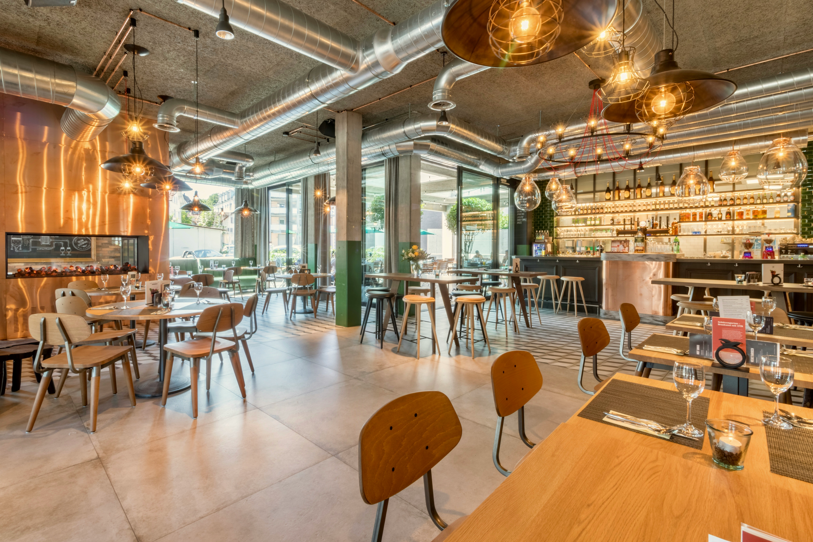

Your first year is busy: new friends, new classes, and long days on
campus. It easy to skip meals or spend your whole allowance on milktea.
Eating regular, simple meals help you stay focus in class,
and you
do not
a big budget to do it.
You have more options than u think. Here are the usual go-to spots:
A little planning on Sunday saves you from being broke by Thursday.
always bring a refillable water bottle. Water stations on campus are free, and you will save a lot compared to buying bottle drinks every day.

Photo by: Alexander Faé
Home